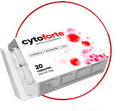
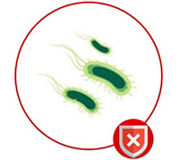
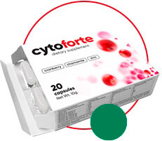
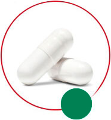

Η κυστίτιδα είναι ένα επίκαιρο και πολύ συνηθισμένο ζήτημα στις γυναίκες. Περίπου 3-6 εκατομμύρια κρούσματα κυστίτιδας αναφέρονται στην Ελλάδα ετησίως. Η γυναίκα έχει κυστίτιδα 30 φορές πιο συχνά από τον άνθρωπο λόγω της ανατομίας (η μικρή και ευρεία ουρήθρα διευκολύνει την είσοδο των βακτηριδίων). Σύμφωνα με στατιστικά στοιχεία, μία στις τέσσερις γυναίκες έχει αυτή τη νόσο τουλάχιστον 6 φορές στη διάρκεια της ζωής της και το 32% των γυναικών πάσχει από χρόνια κυστίτιδα.
ΠΡΟΒΛΗΜΑ ΜΕ ΤΟΝ ΠΟΝΟ ΞΑΝΑ;

cytoforte
ΤΟ ΤΕΛΕΙΩΤΙΚΟ ΧΤΥΠΗΜΑ
έναντια στην κυστίτιδα και τα συμπτώματά της
ΤΑ ΚΥΡΙΑ ΣΥΜΠΤΩΜΑΤΑ ΤΗΣ ΟΞΕΙΑΣ ΚΥΣΤΙΤΙΔΑΣ
ΣΥΧΝΟΟΥΡΙΑ
ΜΙΚΡΕΣ ΠΟΣΟΤΗΤΕΣ ΟΥΡΗΣΗΣ
ΕΠΙΠΟΝΗ ΟΥΡΗΣΗ
Η κυστίτιδα είναι μια φλεγμονώδης διαδικασία στο βλεννογόνο στρώμα της
ουροδόχου κύστης.
Η κυστίτιδα προκαλείται συχνότερα από βακτηριακή λοίμωξη. Ο κύριος λόγος
(έως 80% των περιπτώσεων) κυστίτιδας είναι τα βακτήρια Escherichia coli - Е.сoli.
Τα παθογόνα βακτήρια εισέρχονται στην ουροδόχο κύστη μέσω της ουρήθρας, που προέρχεται από
την κάτω δεξαμενή μόλυνσης - τον κόλπο (βλεννογονίτιδα και κολπίτιδα διαφορετικής
αιτιολογίας) και τον εντερικό σωλήνα (ως αποτέλεσμα της ανθυγιεινής προσωπικής συμπεριφοράς
- λανθασμένο πλύσιμο της ευαίσθητης περιοχής).
Η ανατομία του θηλυκού γεννητικού
συστήματος συμβάλλει στην αύξηση του επιπολασμού της κυστίτιδας.
Η ουρήθρα των γυναικών είναι μικρότερη και ευρύτερη, γι' αυτό είναι ευκολότερο για τα
βακτήρια να περάσουν μέσα από αυτό.
Τα κλινικά συμπτώματα και τα σημάδια κυστίτιδας
στις γυναίκες έχουν ζωηρά κλινικά χαρακτηριστικά όταν πρόκειται για οξεία νόσο.
Τα
συμπτώματα της χρόνιας κυστίτιδας είναι συνήθως ασαφή: δεν είναι τόσο εντατικά, μπορεί να
εμφανίζονται και να ξεθωριάζουν από καιρό σε καιρό.
ΤΙΠΟΤΑ ΠΕΡΙΤΤΟ ΣΤΟ CytoForte. ΧΩΡΙΣ ΑΝΤΙΒΙΟΤΙΚΑ. ΧΩΡΙΣ ΣΥΝΘΕΤΙΚΑ ΣΥΣΤΑΤΙΚΑ
-

-
 Αιθέριο έλαιο κράνμπερι
Αιθέριο έλαιο κράνμπερι -
 Αιθέριο έλαιο χαμομηλιού
Αιθέριο έλαιο χαμομηλιού -
Ψευδάργυρος
-
 Βιταμίνη Ε
Βιταμίνη Ε -
 Βιταμίνες της ομάδας Β
Βιταμίνες της ομάδας Β
Αιθέριο έλαιο κράνμπερι: έχει όξινη δράση, καταστρέφει τα κύτταρα του E.coli
Αιθέριο έλαιο χαμομηλιού: βοηθά στη χαλάρωση των μυών του νεφρογονιδίου, ανακουφίζοντας γρήγορα τον πόνο
Ψευδάργυρος: αναγεννά τον βλεννογόνο ιστό και τα κύτταρα που έχουν υποστεί βλάβη από τη μόλυνση
Βιταμίνη Ε: εμποδίζει την φλεγμονή και ανακτά το ουρογεννητικό σύστημα.
Βιταμίνες της ομάδας Β παράγουν προληπτικές ουσίες που καταστέλλουν τα παθογόνα μικρόβια
Κάνε scroll down και μάθε περισσότερα
cyto forte ΠΡΑΓΜΑΤΙΚΟΣ ΣΥΝΔΥΑΣΜΟΣ ΕΠΙΛΕΓΜΕΝΩΝ ΣΥΣΤΑΤΙΚΩΝ
-

1 προϊόν = 2 δράσεις
2 σε 1 -

Απωθεί τα παθογόνα βακτήρια
-
Προστασία της ουροποιητικού συστήματος
Τα συστατικά επηρεάζουν και εξαλείφουν την τελική αιτία των λοιμώξεων του ουροποιητικού, την ταχεία απομάκρυνση των συμπτωμάτων και την πρόληψη της επαναλαμβανόμενης νόσου
Η βιοδραστικη φορμουλα του CytoForte θεραπευει την κυστιτιδα
σε 8 σταδια
- ΠΡΟΛΗΠΤΕΙ ΒΑΚΤΗΡΙΑ ΑΠΟ ΤΗΝ ΠΡΟΣΕΓΓΙΣΗ ΤΩΝ ΟΥΡΟΠΟΙΗΤΙΚΩΝ ΚΥΤΤΑΡΩΝ 1
- ΠΑΡΑΜΟΡΦΩΝΕΙ ΤΑ ΒΑΚΤΗΡΙΑΚΑ ΚΥΤΤΑΡΑ 1
- ΒΛΑΠΤΕΙ ΒΑΚΤΗΡΙΑ ΚΑΙ ΜΠΛΟΚΑΡΕΙ ΤΗ ΣΥΝΘΕΣΗ ΤΟΥΣ 1
- ΠΡΟΛΑΜΒΑΝΕΙ ΤΟ ΣΧΗΜΑΤΙΣΜΟ ΒΑΚΤΗΡΙΑΚΟΥ ΒΙΟΦΙΛΜ 2
- ΒΟΗΘΑ ΝΑ ΑΠΑΛΛΑΓΕΙΤΕ ΑΠΟ ΤΑ ΒΑΚΤΗΡΙΑ ΤΗΣ ΟΥΡΙΚΗΣ ΟΔΟΥ 1
- ΕΠΙΔΡΑ ΣΤΟ ΕΠΙΠΕΔΟ ΤΟΥ ΟΥΡΙΚΟΥ ΟΞΕΩΣ
ΚΑΝΟΝΙΚΟ ΕΠΙΠΕΔΟ ΟΞΥΤΗΤΑΣ: pH = 7 - ΧΡΗΣΙΜΟΠΟΙΕΙΤΑΙ ΓΙΑ ΤΟΝ ΠΕΡΙΟΡΙΣΜΟ ΤΗΣ ΛΟΙΜΩΞΗΣ ΣΤΗΝ ΟΥΡΙΚΗ ΟΔΟ
- ΚΑΝΕΙ ΤΟ ΣΩΜΑ ΠΙΟ ΕΠΙΡΡΕΠΕΣ ΣΤΙΣ ΛΟΙΜΩΞΕΙΣ

Νικόλαος Αλεξιάδης
Ουρολόγος, κάτοχος διδακτορικού διπλώματος
στην Ιατρική
Οι συστάσεις μου για ασθενείς που έχουν κυστίτιδα: αποφύγετε τα σφιχτά συνθετικά
εσώρουχα που είναι δυσάρεστα για το σώμα σας. Δεύτερον, μείνετε στο κρεβάτι αν
είναι δυνατόν. Το τρίτο και ίσως το πιο σημαντικό σημείο: πάρτε το συμπλήρωμα
διατροφής -
CytoForte.
Προς το παρόν, αυτό είναι το μόνο φάρμακο ταχείας δράσης που δεν έχει παρενέργειες, σε αντίθεση με τα αντιβιοτικά. Χρειάζονται μόλις 17 λεπτά αναμονής μετά τη λήψη του CytoForte πριν ξεκινήσει η θεραπεία. Το υψηλό επίπεδο αποτελεσματικότητας του CytoForte εξασφαλίζεται από ένα σύμπλεγμα δραστικών συστατικών τα οποία τα μικρόβια που προκαλούν βακτήρια - κυστίτιδα - δεν αναπτύσσουν ανοσία. Το φάρμακο καταστρέφει αποτελεσματικά τους παθογόνους οργανισμούς στο ουρογεννητικό σύστημα και βοηθά στην εξάλειψη των δυσάρεστων συμπτωμάτων της νόσου. Αποβολή του βακτήριου Ε. Coli στο 98% των περιπτώσεων και πρόληψη ενάντια στην υποτροπή μελλοντικής νόσου. .
ΜΙΑ ΣΥΣΚΕΥΑΣΙΑ ΤΟΥ cytoforte ΠΕΡΙΕΧΕΙ 20 ΚΑΨΟΥΛΕΣ
-

20 κάψουλες σε μία συσκευασία
20 κάψουλες
-

1 - το πρωί , 1 - πριν από τον ύπνο
2 κάψουλες την ημέρα
-

Συνιστώμενη θεραπεία 30 ημέρες
3 πακέτα
Μπορείτε να πάρετε το συμπλήρωμα για μεγάλο χρονικό διάστημα (έως και 1 μήνα) και να επαναλάβετε την πορεία της θεραπείας κατά τη διάρκεια του έτους, εάν χρειαστεί, επειδή τα φυτικά συστατικά που περιέχουν CytoForte δεν συνεισφέρουν στον σχηματισμό ανθεκτικότητας και δεν αντέχουν στα αντρικά βακτηρίδια.
Πως να παρετε το CytoForte:
-
2 κάψουλες / ημέρα ΟΧΙ ΛΙΓΟΤΕΡΟ ΑΠΟ ΕΝΑ ΜΗΝΑΜΕΤΑ ΑΠΟ ΤΗΝ ΛΟΟ* ΘΕΡΑΠΕΙΑ
ΜΕ ΑΝΤΙΒΙΟΤΙΚΑ -
2 κάψουλες / ημέρα ΟΧΙ ΛΙΓΟΤΕΡΟ ΑΠΟ ΕΝΑ ΜΗΝΑΣΕ ΠΕΡΙΠΤΩΣΗ ΣΥΧΝΟΤΗΤΑΣ ΛΟΟ* ΕΠΑΝΑΛΗΨΗΣ
(> 3 περιπτώσεις επανάληψης κατά τη διάρκεια ενός έτους) -
1 κάψουλες / ημέρα ΟΧΙ ΛΙΓΟΤΕΡΟ ΑΠΟ ΕΝΑ ΜΗΝΑΣΕ ΠΕΡΙΠΤΩΣΗ ΥΨΗΛΟΥ ΚΙΝΔΥΝΟΥ
ΛΟΟ* ΑΝΑΠΤΥΞΗ
ΣΥΣΤΑΤΙΚΑ ΤΩΝ ΘΕΡΑΠΕΥΤΙΚΩΝ ΣΤΗΡΙΞΕΩΝ ΒΟΗΘΗΣΟΥΝ ΤΗΝ ΑΝΤΙΜΕΤΩΠΙΣΗ ΤΗΣ ΑΝΤΙΜΙΚΡΟΒΙΑΚΗΣ ΠΡΟΣΤΑΣΙΑΣ ΚΑΙ ΠΡΟΛΗΨΗΣ ΤΗΣ ΠΕΡΙΣΣΟΤΕΡΗΣ ΑΝΑΣΤΑΣΗΣ ΤΗΣ UTI *
* ΛΟΟ - Λοίμωξη της ουροποιητικής οδού
Οι περιπτώσεις κατά τις οποίες είναι πιθανή η λήψη του CytoForte είναι οι ακόλουθες: μετά την αντιμικροβιακή περίοδο ΛΟΟ*, συχνές περιπτώσεις επανεμφάνισης μολύνσεων από ΛΟΟ* και σε περίπτωση υψηλότερου κινδύνου εμφάνισης λοιμώξεων από ΛΟΟ* που επηρεάζονται από δυσμενείς παράγοντες (εποχιακές διακυμάνσεις, ζεστό κλίμα, υποθερμία, στρες, ταξίδια, συνθήκες υγιεινής).
ΕΧΟΥΝ ΔΟΚΙΜΑΣΕΙ ΤΟ CytoForte
Το 98% των αγοραστών συστήνουν την αγορά αυτού του
προϊόντος
Αν αντιμετωπίζετε επιθέσεις κυστίτιδας, τα κυριότερα
είναι το cytoforte και η σεξουαλική αποχή. Αν ακολουθήσετε αυτούς τους κανόνες,
μπορείτε να απαλλαγείτε από τα δυσάρεστα συμπτώματα σε μια μέρα. Δεν καταλαβαίνω
τους ανθρώπους που παίρνουν αντιβιοτικά ενώ υπάρχει ένα τόσο υπέροχο ανάλογο φυτικής
προέλευσης. Με την ευκαιρία, ξεχάστε να χρησιμοποιείτε σακούλες ζεστού νερού - αυτό
θα δημιουργήσει θετικό περιβάλλον για τη βακτηριακή ανάπτυξη.
Ροζίνα, 34 ετών 
Ποτέ δεν είχα σκεφτεί ότι θα βρω κάτι χρήσιμο στο
Διαδίκτυο. Όταν ήρθε η ώθηση για άλλη μια φορά, άρχισα να ψάχνω για νέες μεθόδους
για τη θεραπεία της κυστίτιδας και βρήκα το CytoForte. Δεν μπορώ να πω ότι
αποδεικνύει την αποτελεσματικότητά της αμέσως, αλλά λειτουργεί. Η επώδυνη ούρηση και
η συχνή παρόρμηση ούρησης εξαφανίστηκαν την επόμενη μέρα. Το πράγμα που θα ήθελα να
επισημάνω είναι ότι δεν υπήρξε υποτροπή μέσα σε 6 μήνες, παρόλο που μου διαγνώστηκε
η χρόνια μορφή της νόσου.
Φαίη, 37 ετών Πραγματικά γρήγορη επίδραση! Είχα χρόνια
πυελονεφρίτιδα, κάθε περίπτωση ψυχρής ή υπερωριακής εργασίας οδήγησε σε υποτροπή.
Έλαβα τη θεραπεία του κατά τη διάρκεια σχεδόν 4 ετών, χρησιμοποιούσα τόσο
αντιβιοτικά όσο και φυσικά θεραπείες. Έχω δοκιμάσει πολλά πράγματα χωρίς σημαντική
ανακούφιση. Κατόπιν συμβουλής του γιατρού μου, πήρα την πορεία του CytoForte πέρυσι
και ανακτήθηκα. Η ασθένεια δεν έχει επανέλθει έκτοτε. Τώρα συστήνω αυτό το φάρμακο
σε όλους.
Ελένη, 44 ετών